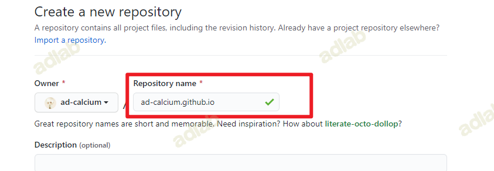
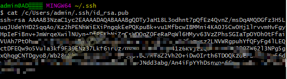
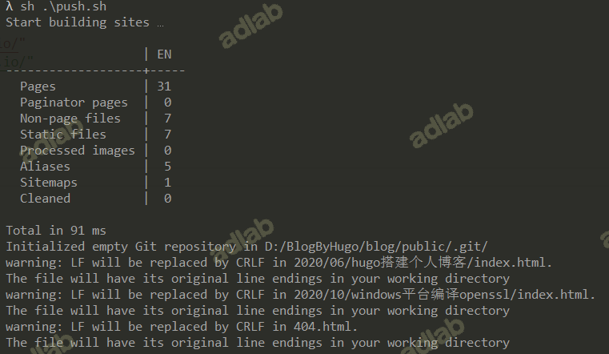

1、hugo
hugo是基于命令行的静态网站生成工具，使用go语言开发。因此，下载编译好的二进制文件，就可以直接运行，无需安装其它依赖。将hugo添加到环境变量，更便于使用。
hugo源码地址：hugo github
常用命令列表
通过hugo help命令可以获取hugo命令行的帮助文档。
hugo new site
创建一个新的网站(骨架), 例如: hugo new site myblog，他会在当前目录下创建一个myblog的文件夹，并在其中填充必须的必须的目录和文件。
下面是myblog文件夹的结构：
├─archetypes
├─content
├─data
├─layouts
├─resources
│ └─_gen
│ ├─assets
│ └─images
├─static
└─themes
└─study-theme
├─archetypes
├─layouts
│ ├─partials
│ └─_default
└─static
├─css
└─js
hugo new
添加网站内容. 例如: hugo new about.md，他会在content目录下生成一个about.md的文件，根据这个文件可以生成对应的静态页面。可以在about.md前面添加对应的路径，但文件会以content为根目录，也就是说所有添加新文件都会存放在content目录下面。
hugo new theme
为网站添加UI，也就是模板文件/主题文件。例如: hugo new theme mytheme。这会在themes目录下创建一个mytheme目录，mytheme目录中会默认添加一些基本的文件结构。所有的模板/主题文件都会保存在themes目录中。
hugo
hugo本身就是一个命令，他的作用就是生成静态网站，默认在生成的静态文件保存在public目录中，也可以指定路径。
hugo server
hugo自带一个web服务器，运行hugo server后可以通过 http://localhost:1313 来访问静态网站。
下面是hugo server常用的参数, 注意大小写:
-p 端口: 修改默认端口
-D: 在使用server预览网站时，draft属性为ture的草稿文件是不会生成预览的，添加-D后可以预览草稿文件。
2、hugo theme
hugo theme的下载地址：hugo themes
我这里选择用的是[hugo-theme-pure]https://github.com/xiaoheiAh/hugo-theme-pure
用这个的原因是：界面比较简洁、有文章归档、有关键词搜索（这个我很需要）
3、使用hugo Page Bundles
文档地址：Page Bundles
Page Bundles 简单来说就是可以把md文件和图片置于同一个目录下（正常引用图片需要放在static目录下），其中images目录保存index.md所有引用图片。这样做的好处是，方便以后查找和做导出。
4、编辑博客内容
使用markdown编辑文本，放在content目录下。
5、本地生成
生成静态网页到public目录下：
hugo
运行本地web服务：
hugo server
6、部署到github
6.1 新建项目
创建github仓库，Repository name 是 用户名.github.io：

其他的默认即可

项目建立成功
6.2 生成ssh公钥
ssh-keygen -t rsa -C "xxxx@qq.com"
查看(根据自己生成结果，查看相应的公钥)
cat /c/Users/admin/.ssh/id_rsa.pub

6.3 将公钥上传到GitHub
点击新建ssh key

将生成号的公钥复制到这里
设置好之后，具体如下
在git中设置邮箱地址和用户名
git config --global user.email "you@example.com"
git config --global user.name "Your Name"
初始化仓库
git init
将所有内容添加到git
git add .
提交到git 本地
git commit -m "我的博客第一次提交"
关联到远程git，注意这里需要写你自己的git 地址
git remote add origin git@github.com:ad-calcium/ad-calcium.github.io.git
推送到远程git
git push origin master
如果报错
git pull --rebase origin master
自动化部署脚本：
#!/bin/bash
# 部署到 github pages 脚本
# 错误时终止脚本
set -e
# 删除打包文件夹
# rm -rf public
# 打包
hugo --baseUrl="https://far-morningstar.github.io/"
# 进入打包文件夹
cd public
# Add changes to git，第一提交需要 git init
# git init
git add .
# Commit changes.
msg="building site `date`"
if [ $# -eq 1 ]
then msg="$1"
fi
git commit -m "$msg"
# 添加远程仓库
git remote add origin git@github.com:ad-calcium/ad-calcium.github.io.git
# 推送到github
git push -u origin master
# 回到原文件夹
cd ..
我这里使用的是windows系统，安装Cmder，可以执行bash脚本： 